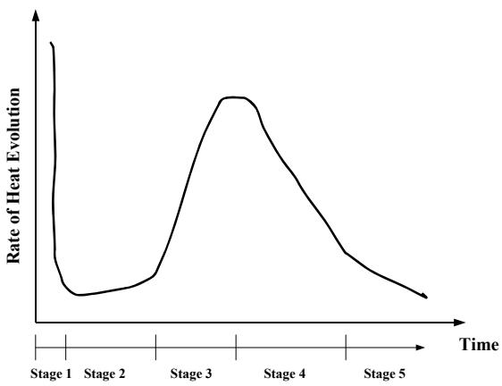
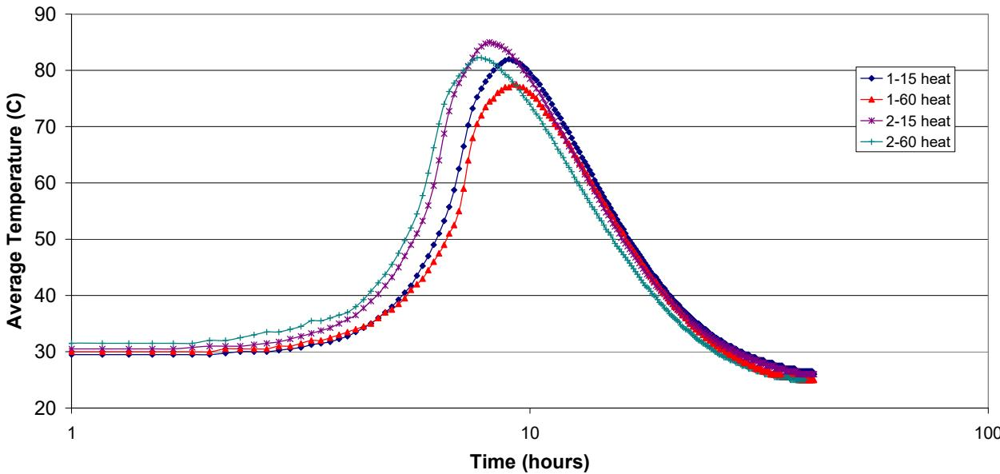
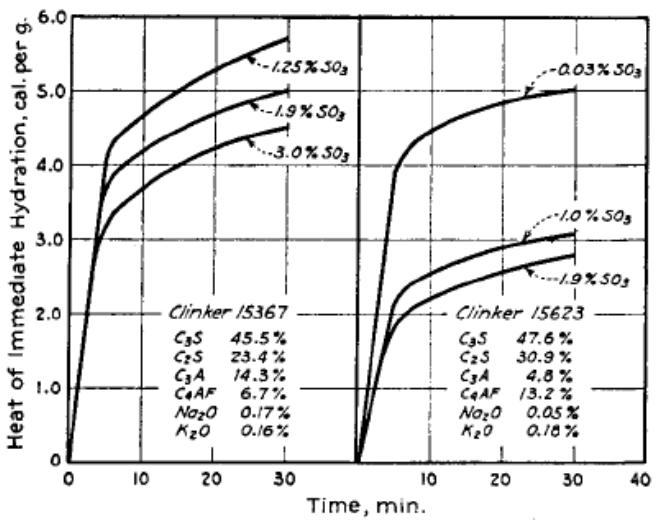
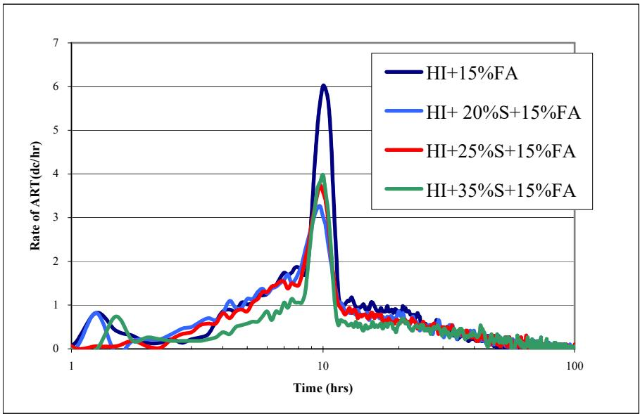
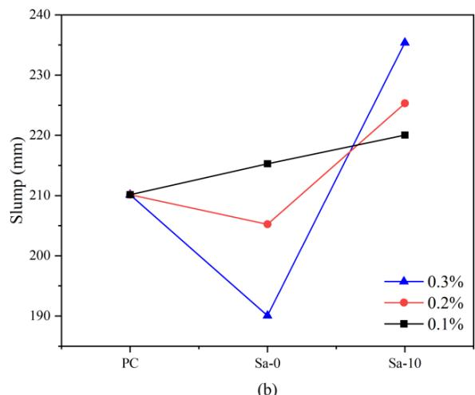
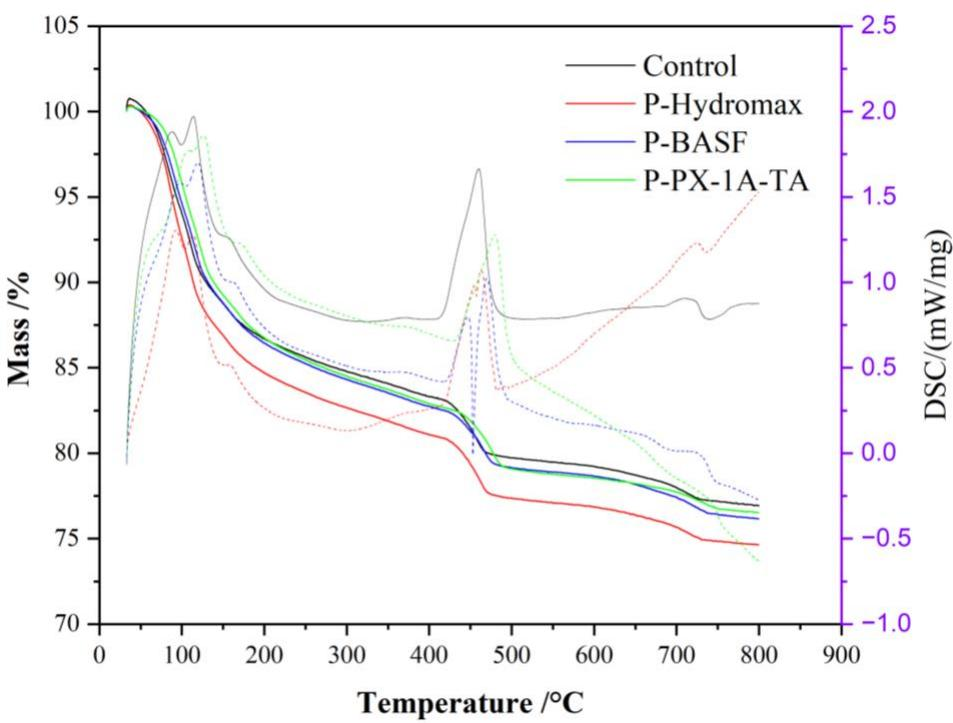
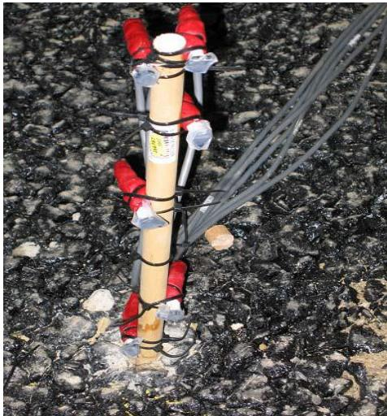
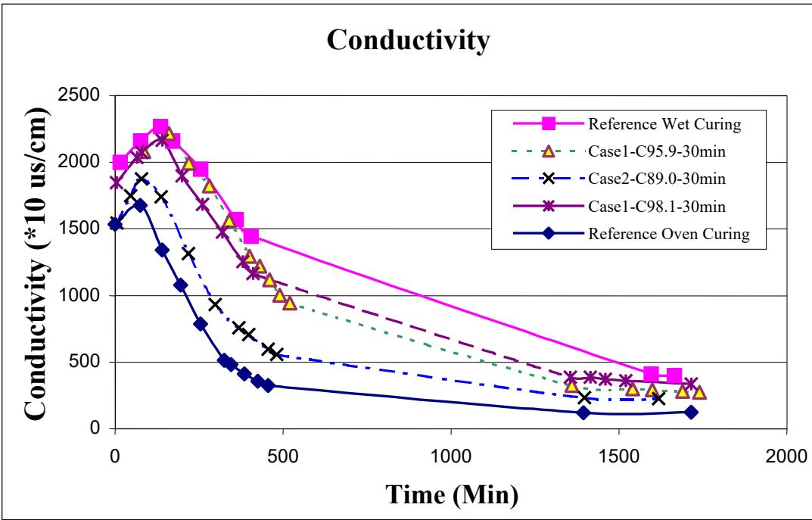

Cement Hydration
Cement hydration is the fundamental exothermic chemical mechanism underlying Hydration, Heat & Maturity, wherein anhydrous cement phases react with water to form calcium silicate hydrate gel and portlandite [1]. This specific chemical reaction constitutes the primary source of heat generation within the parent concept, liberating Heat of Hydration particularly during the acceleration period when reactions involving these primary phases intensify [1]. The process directly influences concrete workability, setting behavior, strength gain, and pore structure development [1]. Degree of Hydration quantifies reaction extent, Heat of Hydration measures the resulting thermal energy release, and Heat Signature provides a unique temperature-time fingerprint for mix characterization [1], [2]. Initial Set marks the transition to rigidity governed by these kinetics, while Thermogravimetric Analysis serves as a laboratory technique to measure non-evaporable water for determining Degree of Hydration [1].
Sources (37)
Sub-concepts (5)
Stages of Cement Hydration
The hydration process occurs in several distinct stages, beginning with an initial rapid reaction (stage 1, 15–30 min) characterized by ion dissolution and C3A-gypsum reaction, which is usually not captured by calorimetry due to its short duration. This is followed by a dormant period (stage 2, <5 hours) where hydration slows, concrete remains flowable, and ion concentrations of C3S and C2S increase. The acceleration period (stage 3) follows, during which C3S and C2S hydration causes rapid temperature rise and concrete hardening. Subsequently, the process enters a deceleration stage (stage 4) as the hydrate layer thickens and diffusion governs the reaction rate, leading into a steady state (stage 5) where this diffusion-controlled phase continues; stages 4 and 5 are collectively known as the diffusion control phase. While calcium silicate hydrate (C-S-H) is the primary strength-providing product of cement hydration, calcium hydroxide (CH) acts as a weak point that does not contribute to concrete strength, though pozzolanic supplementary cementitious materials can consume CH and produce additional C-S-H to increase the ultimate strength of the hardened matrix [3]. Hydration is less pronounced at the top surface of concrete slabs compared to deeper layers, a trend observed in both field-cored samples and laboratory cast specimens [4].
Cement hydration is quantified by the degree of hydration, which represents the fraction of cement mass that has reacted with water at a specific time. This metric indicates the extent of the reaction and can range from zero to one [25]. The total heat liberated during this process is directly related to the degree of hydration, meaning it increases as more cement reacts [1].
Initial set represents a specific kinetic stage in cement hydration where the paste transitions from a fluid state to a rigid solid, marking the cessation of plasticity. This transition is coincident with the point when hydration products begin to interact with each other [33]. Consequently, the speed of sound through the sample starts to increase as the material shifts from fluid-like to solid-like behavior [37].
Furthermore, CSA cement exhibits strength loss at later ages due to the conversion of ettringite to less volumetric monosulfate, which increases porosity [5]. Regarding structural integrity, secondary ettringite deposits frequently form by recrystallizing in larger spaces such as air voids or cracks after water enters existing microcracks, a process that can fill voids smaller than 50 µm and line larger ones [6].
 igure 11. Ettringite-filled air voidsF [6]
igure 11. Ettringite-filled air voidsF [6]
- Initial rapid rise — Ion dissolution and rapid C3A-gypsum reaction (15-30 min, not captured by calorimetry)
- Dormant period — Little heat generated; concrete remains flowable
- Acceleration period — C3S and C2S hydration starts; temperature rises rapidly; concrete hardens and gains strength
- Deceleration — Hydration slows; diffusion governs reaction rate
- Steady state — Diffusion-controlled phase continues

Cement hydration process [1]Effects Of Admixtures And Scms
Adding water reducers and fly ash replacement increases the activation energy of cementitious materials [7], while increasing the rate of hydration requires a greater amount of soluble calcium sulfate to control aluminate hydration due to the larger surface areas of supplementary cementitious materials [2]. Energetically Modified Cement (EMC) utilizes intensive grinding to create submicrocracks and microdefects within cement particles, enabling deeper water penetration that activates inert fillers like fine quartz sand and increases the percentage of potential binding capacity utilized [8].
Regarding volume changes, autogenous shrinkage represents the macroscopic volume reduction resulting directly from cement hydration in fresh concrete without involving internal moisture movement or gradients [9]. Consequently, higher degrees of cement hydration aggravate self-desiccation and macroscopically lead to joint contraction in concrete pavements [9].
 Recreated from Cement Concrete & Aggregates Australia 2002 Figure 4. Typical volume behavior of concrete drying and wetting [9]
Recreated from Cement Concrete & Aggregates Australia 2002 Figure 4. Typical volume behavior of concrete drying and wetting [9]
Factors Influencing Hydration Rates
The Cement type and composition significantly influence hydration, with C3A and C3S being the most reactive components. Factors such as sulfate content, which allows gypsum to retard the C3A reaction, fineness (where a higher Blaine increases the early-age hydration rate), and the water/cement ratio (where a higher ratio increases the ultimate degree of hydration) all play critical roles. Additionally, curing and initial temperature affect the process, as high temperature accelerates early hydration, while chemical admixtures can either delay via retarders or advance hydration via accelerators. In oven-cured specimens, the middle section typically exhibits the highest degree of hydration due to sustained moisture and temperature, whereas surface layers show lower values due to heat loss [10].
The interaction between admixtures and cement components can further alter hydration kinetics. For instance, the combined use of supplementary cementitious materials and water-reducing admixtures can severely delay strength development due to insufficient sulfate content to control aluminate reactions accelerated by the admixtures [2]. Specifically, the presence of Type A water reducer can completely suppress visible silicate reaction peaks in binary mixtures containing Class C fly ash [2], and extensive usage of superplasticizers can retard cement hydration because the polymers attach to cement particle surfaces and prevent them from reacting with water [5].
Temperature and section geometry also dictate hydration behavior.
Various accelerated hydration techniques can be employed to enhance concrete properties, such as microwave-induced setting, which instantly heats concrete internally to initiate the hydration process; this allows finishing, jointing, texturing, and curing to be completed in trailing forms without returning for sawing [8].
Alternatively, induction heating accelerates hydration by using an externally applied electric current to heat steel fibers embedded within the concrete mixture [8].
Laboratory evaluation of accelerated hydration techniques must monitor for adverse phenomena such as moisture loss and differential heating [8].
High shear mixing energy also serves to accelerate the rate of cement paste hydration and shifts major heat generation earlier compared to normal mixing, with peak hydration rates observed at high speeds (e.g., ~14,000 rpm) for extended durations [11].

Heat of hydration results for 100% PC, high shear mixer [11]Increasing mixing energy reduces plastic viscosity and peak stress in cement slurries, creating a more thoroughly mixed suspension that facilitates earlier particle wetting and deflocculation [11].
 Effect of mixing methods on peak stress of cement paste [11]
Effect of mixing methods on peak stress of cement paste [11]
As confirmed by scanning electron microscope imaging, high shear mixing consistently yields a higher degree of hydration (averaging about 6% greater than normal mixing) and reduces the percentage of unhydrated cement particles [11].
 Computer-adjusted SEM image for the high shear mixer, 100% PC, speed two, 60 seconds [11]
Computer-adjusted SEM image for the high shear mixer, 100% PC, speed two, 60 seconds [11]
Pastes containing fly ash require lower mixing energy to reach optimal uniformity compared to pastes composed solely of cement, indicating material-specific rheological responses to shear forces [11].
Specific admixtures and cement compositions significantly influence hydration.
Chemical composition also plays a role, as increasing C3A content from 0% to 20% almost doubles the total liberated heat during hydration [1], and gypsum is added during cement production to control the early reaction of tricalcium aluminate, preventing false or flash set caused by low or overdosed sulfate levels [1].

Heat of immediate hydration with S O_3 varied (adapted from Lerch et al. 1946) [1] Heat of hydration with specific surface varied (adapted from Lerch et al. 1946) [1]
Heat of hydration with specific surface varied (adapted from Lerch et al. 1946) [1]
Impact Of Supplementary Materials
The use of Supplementary Cementitious Materials (SCMs) significantly alters the hydration and thermal properties of concrete.
The physical characteristics of these materials dictate their interaction with water and hydration kinetics.
The addition of pozzolanic SCMs reduces bleed water in fresh concrete due to fine particle size and water consumption during the reaction, which accelerates negative capillary pressure development and increases susceptibility to plastic shrinkage cracking [3]. Strength development is further influenced by material type and alkali content: silica fume increases early- and later-age strength by immediately affecting cement hydration, whereas Class F fly ash and ground granulated blastfurnace slag decrease early strength but increase ultimate strength [12]. Furthermore, low-alkali cements combined with slag cement develop approximately 10 MPa higher compressive strengths than high-alkali cements at identical replacement levels [13]. Finally, pervious concrete mixtures containing 35% slag and 15% class C fly ash demonstrate good early-age and long-term performance while achieving freeze-thaw durability factors above 95 [14].
The specific effects of these materials vary; Fly Ash replacement delays the dormant period and peak by ~1.5 hours [15], and it also delays the peak rate of adiabatic temperature rise by approximately 1.5 hours relative to concrete without fly ash [15].
 Effect of fly ash on binary cement concrete heat signature [15]
Effect of fly ash on binary cement concrete heat signature [15]
Higher CaO content in Fly Ash increases total heat, and high-calcium fly ashes may contain calcium aluminates that require additional sulfates to control their reactions, meaning increasing the rate of hydration requires a greater amount of soluble calcium sulfate [2].
The addition of a Type A water reducer to a binary mixture containing 32% Class C fly ash can completely suppress the visible silicate reaction peak that is otherwise observed in plain cement and blended mixtures [2].
Ternary mixtures combining Class C fly ash and Class F fly ash can increase final setting time by up to 402 minutes compared to Type I control due to reduced portland cement content and unoptimized soluble sulfates [16].
Slag produces two heat peaks from cement hydration and the slag reaction, but it does not delay cement reaction; instead, slag replacement does not postpone the dormant period and may slightly accelerate initial set time compared to concrete without slag [15].

Effect of slag on ternary cement concrete heat signature [15]Increasing slag replacement levels in ternary cement systems causes datum temperature to increase linearly while activation energy increases exponentially [15].
 Effect of slag replacements on datum temperature and activation energy [15]
Effect of slag replacements on datum temperature and activation energy [15]
Ternary cement concrete exhibits higher activation energy than binary cement concrete, reflecting differences in hydration kinetics between the systems [15].
While Slag behaves like cement and tends to increase shrinkage due to increasing volume of cementitious material, ternary mixtures can be formulated to entirely compensate for the drying shrinkage effects typically caused by slag [17].
 Illustration of how ternary mixtures impact the shrinkage of mortar bars [17]
Illustration of how ternary mixtures impact the shrinkage of mortar bars [17]
Mixtures containing Grade 120 GGBFS exhibit a significantly larger heat signature than those using Grade 100 GGBFS due to the finer grinding of the Grade 120 material [2].
Metakaolin incorporation increases the heat of hydration, but when used at amounts less than 10% by weight, its heat signature curves can closely match those of plain Portland cement concrete [2].
Silica fume replacement at 3% or 5% produces a negligible change in heat signatures compared to control mixtures, indicating that up to 5% silica fume can be used without noticeably altering thermal behavior [16]; however, silica fume increases early-age heat of hydration by providing nucleation sites for the formation of calcium silicate hydrate and calcium hydroxide, which accelerates the overall rate of cementitious reactions [3].
Ternary blended cements containing GGBFS and fly ash can achieve a low adiabatic temperature rise of 47.9°C, representing approximately a 75% reduction compared to normal Portland cement concrete [2].
The degree of hydration in cement pastes decreases significantly with the addition of supplementary cementitious materials, dropping approximately 12% with 35% fly ash, 25% with 35% slag, and 30% with combined ternary blends [11].
Regarding temporal properties, the time to maximum temperature equation shows that an increase in the fly ash calcium oxide content will increase the time to maximum temperature [2], and the time to maximum temperature increases with higher fly ash calcium oxide content [2].
An increase in metakaolin and silica fume will decrease the time to maximum temperature [2], as metakaolin and silica fume decrease the time to maximum temperature [2].
This is expected, since silica fume and metakaolin tend to reduce the time to initial and final set when used without a water reducer [2].
 Set time and mortar flow for mixtures containing Type I PC and 35% GGBFS or Type I PC and 5% metakaolin [2]
Set time and mortar flow for mixtures containing Type I PC and 35% GGBFS or Type I PC and 5% metakaolin [2]
Internal Curing and Moisture Management
Cement hydration requires an adequate water supply and proper temperatures over an extended time, which is why external curing methods are used to prevent surface drying and maintain moisture for continued reactions [18]. When the relative humidity in concrete falls below 80%, cement hydration may cease, making moisture retention critical for complete reaction [10]. Relative humidity within concrete generally increases as pavement depth increases and tends to rise in correlation with increasing temperature [19]; specifically, the moisture gradient within a concrete slab varies dramatically up to a depth of about 2 inches, with deeper areas remaining at approximately 80% saturation or higher [20]. Self-desiccation, a uniform reduction of internal relative humidity throughout concrete thickness caused by cement hydration, leads to autogenous shrinkage as capillary water becomes less free during the reaction [9]. This self-desiccation occurs when capillary pore water is consumed during cement hydration, which reduces capillary pore humidity and drives autogenous shrinkage in low water-to-cementitious ratio mixtures [20].
To mitigate these effects, internal curing using lightweight fine aggregate (LWFA) particles functions as internal water reservoirs that release moisture to sustain cement hydration in low water-to-cement ratio mixtures where initial batch water is insufficient for complete reaction [21]. Internal curing using lightweight fine aggregates (LWFAs) provides internal water reservoirs that prolong cement hydration, allowing hydraulic reactions to continue without adversely affecting fresh or hardened physical properties [18]. Using LWFA extends the period of active cement hydration for approximately one month after placement by providing a continuous internal water supply that mitigates self-desiccation in low water-to-cement ratio mixtures [22]. Internal curing using saturated lightweight fine aggregate promotes more efficient hydration of supplementary cementitious materials like fly ash and slag cement by maintaining internal relative humidity above critical thresholds [21]. Internally cured concrete utilizing lightweight aggregates increases the hydration extent of supplementary cementitious materials, which reduces overall porosity and improves durability while maintaining similar compressive strength and freeze-thaw performance compared to conventional mixes [23]. This process mitigates autogenous shrinkage by supplying water from within the matrix as internal relative humidity decreases [23]. Furthermore, internal curing with saturated lightweight fine aggregate can increase the calcium silicate hydrate (C-S-H) content by approximately 20% at 28 days compared to conventional mixes, as measured by thermal gravimetric analysis [24]. This enhanced hydration product formation is accompanied by a decreased modulus of elasticity, which reduces internal stresses under shrinkage strains [24]. Semi-adiabatic calorimetry reveals that internally cured concrete mixtures maintain higher internal temperatures during the first 72 hours compared to conventionally cured mixes, reflecting sustained heat evolution from continued hydration reactions [22]. The use of internal curing agents such as saturated lightweight aggregates or superabsorbent polymers (SAPs) significantly increases surface electrical resistivity in concrete mixtures, indicating a denser microstructure and reduced permeability due to enhanced hydration product formation [22].
 Conventional curing compared to internal curing [23]
Conventional curing compared to internal curing [23]
The primary objective of internal curing is to maintain early-age concrete moisture above a 90% relative humidity threshold by substituting approximately 20% to 25% of the fine aggregate volume with saturated lightweight aggregates, ensuring that water reservoirs are uniformly distributed within the matrix to sustain hydration reactions [24]. Internal curing using prewetted lightweight fine aggregate (LWFA) typically requires replacing approximately 30% of the fine aggregate volume to provide an internal water equivalent to the chemical shrinkage of a typical cement mixture [23]. This method supplies curing water from within the concrete matrix rather than relying on external surface wetting, which is particularly effective for low water-to-cementitious ratio concretes where external penetration is limited [23]. The internal curing water requirement is generally estimated at 7 lbs of water per 100 lbs of cementitious materials, calculated based on the absorption capacity and mass of the lightweight aggregate used; notably, water absorbed by the internal curing agent before setting does not contribute to the effective water-to-cementitious material ratio that determines pore structure [23].
 Conceptual illustration of volumetric components in a plain and internally cured mixture [23]
Conceptual illustration of volumetric components in a plain and internally cured mixture [23]
Alternatively, superabsorbent polymers (SAPs) can serve as alternative internal curing agents by absorbing pore fluid and maintaining high relative humidity within the concrete, though their absorption capacity is highly dependent on the ionic strength of the surrounding solution [23]. Testing for SAP absorption involves submerging a known quantity in a prepared solution for 30 minutes after an initial dispersion step [23]. The absorbency rate of superabsorbent polymers (SAP) directly influences the workability of fresh concrete by reducing available water and forming gel-like structures that alter internal water distribution [25].

Effects of SAP on the slump of concrete for (a) SAP-a and (b) SAP-b, where Sa-0 is dry and Sa-10 is pre-absorbed (particle size: SAP-a > SAP-b) [25]Internal curing significantly enhances the efficiency of supplementary cementitious materials like fly ash and slag by maintaining internal moisture levels that drive their slower pozzolanic reactions, an improved hydration environment that reduces autogenous shrinkage and lowers permeability compared to standard mixtures [21].
Lightweight fine aggregate (LWFA) used for internal curing acts as water reservoirs that replenish moisture depleted during hydration, promoting more complete cementitious reactions without altering the batch water-to-cement ratio; this mechanism is particularly effective in low w/cm mixtures where standard batching water is insufficient to hydrate all cement particles [21].
While semi-adiabatic calorimetry testing reveals that internal curing mixes exhibit only a small effect on the elapsed time required to reach peak temperature compared to control mixtures [21], the internal moisture supply allows for more complete hydration over the long term [21].
Semi-adiabatic calorimetry monitoring reveals that internally cured mixtures maintain higher internal temperatures than control mixes during the first 72 hours, reflecting increased reaction rates driven by the internal water reservoir [22].
 Calorimetry strength test results (psi) [22]
Calorimetry strength test results (psi) [22]
Internal curing using lightweight fine aggregate (LWFA) maintains elevated concrete temperatures for up to three weeks after construction, indicating sustained hydration activity that is absent in conventionally cured mixtures [22], though the inclusion of lightweight fine aggregate for internal curing does not alter the concrete’s maturity index, despite the prolonged heat generation and extended hydration period observed in field applications [22].
Alternatively, superabsorbent polymers (SAPs) act as internal water reservoirs that release moisture to sustain hydration in low w/cm mixtures, resulting in a slightly higher primary hydration peak and increased bound water content compared to control pastes [25].
The incorporation of SAPs increases the degree of hydration and bound water content at seven days, as confirmed by thermogravimetric analysis showing higher mass loss in specific temperature intervals associated with cement hydration products [25].

TGA results of cement paste samples at 7 days [25]After desorption, SAPs can function as physical air voids, creating a more stable air void system compared to chemical air-entraining agents while mitigating the adverse mechanical effects associated with additional mixing water [25].
SAPs can swell and fill cracks up to 100 μm wide upon water penetration, significantly decreasing permeability in healed crack zones through enhanced pore structure modification [25], and the required dosage of SAP is inversely related to its sorption kinetics, meaning products with higher absorption capacities require lower mixing quantities to achieve target fresh concrete workability [25].
Regarding monitoring, moisture sensing serves as a direct indication of the hydration process and acts as a surrogate for curing effectiveness [8], with the RH generally increasing as pavement depth increases [19].

Moisture sensor packaging [19]Predicting concrete stiffness using temperature and moisture history allows contractors to assess the proper timing for applying surface texture and cutting joints [8].
Concrete Strength and Durability Determinants
Concrete strength at any given age depends on the water-to-cement ratio and the degree of hydration because these factors determine the porosity of both the cement paste and the interfacial transition zone [12]. Increasing the cement content beyond an optimum value does not significantly improve concrete strength or durability but increases internal temperatures during curing and raises the risk of shrinkage cracking [12]. Conversely, increasing the maximum size of aggregate improves durability by reducing the total cement paste content, which is typically the component most sensitive to physical or chemical attack [12]. In pervious concrete mixtures with a binder-to-aggregate ratio of 24%, increasing the water-to-cement ratio from 0.27 to 0.33 significantly reduces porosity while maintaining high compressive strength, which peaks at approximately 17.9 MPa (2,600 psi) at a w/c of 0.29 [14]. Furthermore, in pervious concrete, deicing chemicals like sodium chloride and calcium chloride can cause deterioration through increased moisture saturation, osmotic pressure, and salt crystallization during drying [14]. Regarding structural integrity, the development of cracks on the bottom surface of concrete beams can be indicated by peak tension values reaching up to 1,200 microstrains during handling processes [18].
 Effect of cement content on concrete compressive strength [12]
Effect of cement content on concrete compressive strength [12]
Concrete containing recycled aggregate typically exhibits a lower modulus of elasticity, higher coefficient of thermal expansion, and experiences more drying shrinkage compared to virgin aggregate concrete [26]. Specifically, the presence of old mortar on recycled aggregate increases the water demand and can lead to increased permeability, which must be managed through optimized mix designs [26]; however, hydration of the mortar attached to recycled concrete aggregate improves flexural strengths of the resulting concrete pavement [26]. RCA fines can cause a 20 to 30 percent decrease in strength and further reduce the modulus of elasticity compared to coarse RCA replacement [26], though the use of Class F fly ash can mitigate the potential for alkali-silica reaction (ASR) expansion when recycled concrete aggregate derived from ASR-distressed concrete is used [26]. In other contexts, increasing concrete patch thickness enhances strength gain associated with heat of hydration, as thicker sections retain more internal moisture and temperature to sustain the reaction [27], while early traffic loading can facilitate early strength development by improving concrete density through compression, provided the load is not applied too early or excessively to avoid damage [27]. Additionally, concrete mixtures incorporating supplementary cementitious materials exhibit a coefficient of thermal expansion (CTE) of approximately 1.044 × 10⁻⁵ ε/°C at 56 days [28]. Finally, the latex-solid content in polymer-modified concrete influences shrinkage properties by increasing both total and autogenous shrinkage without significantly altering the overall trend of hydration temperature; an optimum latex concentration of 15% solid polymer by weight of cement balances performance against cost while entraining an air void system that does not require as small a spacing factor as normal concrete [29].
Permeability and Pore Structure
To ensure adequate durability and performance in new concrete mixtures, recycled concrete aggregates with porosity less than 15 percent are recommended [26]. The internal structure of the mixture is influenced by cement hydration, which can generate capillary discontinuity within the pore structure that subsequently hinders further moisture movement during the reaction process [9]. Furthermore, concrete permeability increases significantly when the water-to-cement ratio exceeds 0.42 due to an increase in capillary volume within the paste [12]. However, the addition of supplementary cementitious materials like silica fume can produce smaller pore sizes in which water cannot freeze at ordinary ambient temperatures, thereby reducing the need for air entrainment; this effect is particularly significant when combined with very low water-to-binder ratios [30]. Specifically, a limiting water-to-binder ratio exists below which air entrainment is not required for good freeze-thaw durability, a threshold that is approximately 0.25 for concrete containing Type I cement, 6% silica fume, and dolomitic limestone [30]. Concrete without air entrainment can also achieve freeze-thaw durability if it possesses both very low permeability and high compressive strength, such as a mix with Type IP cement achieving a durability factor of 94.3% at 88.0 MPa [30]. For air-entrained concrete to ensure freeze-thaw durability, the required spacing factor is 0.28 mm or less when measured using AVA, and 0.22 mm or less when measured using RapidAir [30]. Regarding air-entraining agents, the use of Micro Air® air-entraining admixture can produce smaller air bubbles that improve load distribution and result in higher compressive strengths compared to Vinsol resin, even at significantly higher total air content levels [13].
 Durability factor as a function of spacing factor, measured using the RapidAir [30]
Durability factor as a function of spacing factor, measured using the RapidAir [30]
The use of slag also plays a critical role in durability, as increasing slag content significantly reduces chloride ion ingress; for instance, 50% replacement lowers charge passed from over 4000 coulombs at seven days to approximately 700 coulombs at fifty-six days in standard portland cement mixtures [13]. Additionally, Grade 120 slag cement generally outperforms Grade 100 slag in resistance to chloride penetration due to its higher fineness of grinding, although the difference in charge passed remains under 500 coulombs [13].
Mixing Energy and Rheology
Water reducing admixtures function by adsorbing onto cement particles to lower inter-particular attraction, causing agglomerates to break up and producing a more uniform dispersion that increases the available surface area for hydration reactions [31]. Superplasticizers enhance cement particle dispersion through both electrical repulsion and steric hindrance effects, resulting in higher water reduction capabilities compared to normal water reducers [31]. However, doubling or tripling recommended dosage rates of water-reducing admixtures in mixtures with supplementary cementitious materials can cause significant retardation by delaying the silicate hydration peak [2]. In roller-compacted concrete (RCC), low water contents make it difficult for admixtures to initiate their actions effectively, necessitating higher than normal dosages compared to those recommended for standard concretes [31]. Additionally, air entraining admixtures lower the surface tension of water to facilitate bubble formation, with uniform dispersion achieved by blending surfactants that increase the stability of the interfacial layer between air and water [31]. To improve workability, German standards recommend the wet processing of recycled concrete aggregate to remove contaminants and minimize dust on particles [26], while a paste-to-combined-aggregate-voids volume ratio (Vpaste/Vvoids) between 125 and 175 percent is recommended to ensure adequate workability and hardened properties, as higher ratios indicate a greater risk of early-age cracking [4].
Mixing processes also significantly influence material performance; for instance, increasing mixing energy through higher shear rates produces pastes with greater early-age strength by facilitating cement particle deflocculation, which increases the total exposed surface area available for hydration reactions [11]. A specific mixing energy (SME) value of 5.5 kJ/kg is identified as the optimum threshold for oil well cement slurries, where rheological properties such as plastic viscosity and thickening time stabilize once this minimum energy required for deflocculation is reached [11]. Furthermore, two-stage concrete mixing, which involves premixing a cement slurry before adding aggregates, results in compressive strengths that are approximately 10 percent higher than conventional dry batch methods due to improved paste homogeneity and aggregate coating [11]. In terms of rheology, the hysteresis loop area in flow curves represents the energy required to break down inter-particle attractions, with higher pre-shear rates increasing structural breakdown and reducing sensitivity to further mixing [11].
Monitoring and Testing Methods
Hydration processes are further monitored through various physical and chemical analyses. Electrical conductivity during early hydration increases due to rapid ion dissolution and high mobility in pore water, then decreases as hydration products form an electrical double layer that reduces ion number and mobility [10]. Petrographic analysis of hydrated cement paste typically reveals approximately 8-13% unreacted or residual portland cement clinker particles, with alite phases showing well to mostly full hydration and belite phases ranging from moderate to fully hydrated [6]; similarly, image analysis of scanning electron microscope (SEM) micrographs allows for the quantification of unreacted cement particles, demonstrating that internal curing reduces the percentage of non-reacted clinker phases over time compared to conventional curing [22]. Maturity monitoring using the Nurse–Saul method (ASTM C 1074) tracks cement hydration progress as a function of time and temperature by recording concrete temperatures over extended periods, such as up to 28 hours [32]. In these calculations, concrete made with binary or ternary cements exhibits a datum temperature higher than -10°C, which is the standard threshold used in time-temperature factor calculations for ordinary Portland cement [15].

Conductivity Curves and Boundaries [10]Cement hydration involves the chemical reaction of clinker phases with water to form hydrates such as calcium silicate hydrate and portlandite [25]. Thermogravimetric Analysis serves as a laboratory evaluation method for this process by quantifying these products through the measurement of mass loss associated with their dehydration [10]. Specifically, distinct temperature ranges in the analysis correspond to the decomposition of specific phases, allowing for the determination of bound water and calcium hydroxide content [25].
Physical properties such as the speed of sound in concrete increase as hydration products begin to interact with each other at initial set, providing a physical basis for monitoring the stiffening process using ultrasonic pulse velocity (UPV) devices [33]. In this context, P-waves are preferred over S-waves for monitoring hydration because they exhibit a higher signal-to-noise ratio and are less sensitive to sample-transducer contact difficulties [33]. Additionally, moisture sensing serves as both a surrogate for curing effectiveness and a direct indication of the hydration process, allowing inspectors to monitor concrete temperature and moisture history to ensure limits are not exceeded [8]; however, embedded moisture sensors often fail during construction due to the high-alkali environment and extreme liquid water content present in fresh concrete, which can cause direct sensor malfunction or limit functionality to temperature measurement only [19].
The heat signature (temperature-time curve) is considered the “fingerprint” of the cement hydration process. [1], [15]
Compared to Type I and ISM cements, Type III cement exhibits higher values for heat index areas A1 and A3 along with lower set times, indicating faster early-age hydration kinetics [34].
FHWA Project 17 Phase II (wang-2007-simple-rapid-test-heat-evolution-phase2) established validated ranges for heat of hydration across materials and conditions; temperature effects showed a peak shift from 2.6 hours (40°C) to 9.8 hours (10°C), with the peak value shifting from 13.6 to 2.5 mW/g [34].
Cement Type III (fineness 551 m²/kg) had a higher heat rate than Type I (368 m²/kg), and in an incompatible mixture consisting of Type IS + 25% Class C fly ash + water reducer, A2 dropped from 59.9 to 4.8 mwh/g and the initial set moved from 6.2 to 2.6 hours [34].
While concrete mixtures have unique heat signatures, the HIPERPAV program highlights that no accepted standard for measurement currently exists [8]; however, if a heat signature test proves sensitive to pavement performance, additional thermal property tests should be developed for specific heat and thermal conductivity [8].
Specialized Concrete Applications
The hydration processes and additive compositions in various concrete mixtures significantly influence their mechanical properties and workability. In recycled concrete aggregate (RCA), the continued hydration of the old mortar fraction can accelerate setting time in fresh concrete while simultaneously improving flexural strengths in hardened mixtures [26]. Type K shrinkage-compensating cement utilizes Ye’elimite (calcium sulfoaluminate) which reacts with water and gypsum to form ettringite, generating paste expansion that counteracts plastic shrinkage cracking; this expansive mechanism relies on the formation of monosulfoaluminate and aluminum hydroxide during the initial hydration phase [3]. In latex-modified concrete (LMC), cement hydration occurs first and is followed by polymer film formation, resulting in a monolithic co-matrix phase where the polymer interweaves with hydrated cement to coat aggregates and line voids, a sequential reaction mechanism that allows reactive polymers to chemically bond with calcium ions and calcium hydroxide crystals within the paste [29]. For early entry sawing of these observed mixtures, construction timing should begin approximately 220 minutes after the detection of initial set [33].
Material additives further modulate rheology and strength, such as how increasing nano-clay content in cement-based materials significantly increases yield stress, viscosity, and thixotropy, which controls the timely shape-holding ability of self-consolidating slip-form concrete [35]. While the addition of magnesium oxide (MgO) increases green strength through ionic charges that enhance particle cohesion without reducing the flowability of the concrete mixture [35], polypropylene fibers improve both green strength and flowability beyond standard self-consolidating concrete levels, whereas fly ash replacement alone reduces shape stability [35]. Similarly, the addition of cellulose fibers to pervious concrete significantly improves edge-holding ability for slip-form construction without substantially altering initial workability [14]. Finally, in 3D printed concrete, compressive strength is anisotropic; samples loaded parallel to filaments exhibit approximately 27% lower 28-day strength compared to mold-cast samples due to weak bonds between printed layers [5].
Thermal Effects On Pavements
The heat of hydration contributes to early-age volumetric distortion in concrete pavements, where the temperature gradient between the slab bottom and top induces upward curling during cooler periods when the hydrated core remains warmer than the surface [36].
When a non-uniform temperature gradient is induced in a PCC slab, differential strain responses throughout the slab depth lead to curvature, causing upward curling if the bottom is warmer than the top [19].
The temperature difference between the top and bottom of a concrete slab typically ranges from 4°F to 12°F, with the top being more sensitive to ambient conditions while the bottom is influenced by seasonal weather [19].
Hydration at the top surface of a slab is less than that deeper in the slab, as demonstrated by clear trends through the depth of cored samples [4].
Internal tensile stresses can also develop due to restraints to deformation such as dowel bars and friction between the PCC slab and the base course [19].
Regarding specific applications, the PCC patching techniques study demonstrated that thicker concrete patches (13 and 15 inches) generated greater heat of hydration than standard 9-inch patches, producing higher TTF values for the same opening time window [27], while transverse cracking in thin overlays is frequently attributed to the combination of high heat of hydration and inadequate early-age curing, often becoming visible within seven days of placement [29].
To monitor these processes, concrete maturity, calculated using the Nurse–Saul method (ASTM C 1074), is monitored via temperature sensors attached to reinforcement to track hydration progress as a function of time and temperature [32].
For modeling, semi-adiabatic test conditions yield more accurate pavement temperature predictions in simulation software compared to isothermal tests because they better replicate in-situ thermal gradients and utilize concrete samples rather than sieved mortar [7].
Finite element simulations indicate that while thermal models can simulate deformation due to temperature changes, they cannot directly account for permanent deformation at zero temperature difference, requiring the conversion of environmental effects into an equivalent temperature difference to match actual pavement behavior [36].
Regarding finishing activities like sawing, the ratio of initial to final setting times for most mixtures remains consistent between 0.7 and 0.8 regardless of composition or temperature, providing a reliable planning metric [16].
High ambient temperatures significantly reduce the elapsed time required for sawing operations, affecting both conventional and early entry cutting methods at different rates [37], and increasing fly ash dosages delays sawing operations due to slow hydration rates, particularly under cooler conditions, requiring calibration of predicted sawing plots for specific mixtures [4].
Mixtures containing harder quartzite and granite aggregates exhibit similar hydration temperature rise profiles and initial set times as those with limestone aggregates when tested under comparable conditions [37].
Alternative Cement Types
Type K shrinkage-compensating cement exhibits a heat of hydration profile similar to typical portland cement, allowing its use in large-scale structures without inducing significantly higher thermal stresses [3].
Alternative Cementitious Systems
Calcium sulfoaluminate (CSA) cement exhibits a sharp heat generation peak without a dormant period, leading to rapid early-age temperature rises that can cause thermal cracking in thin overlays [29].
Admixture Effects On Setting
While mortar setting time tests using normal consistency samples serve primarily as a comparative tool for cementitious materials rather than predicting actual field concrete set times, these are more accurately captured by concrete penetration resistance tests that account for specific mixture designs [16].
Influence of Cement Chemistry and Admixtures
Exceeding the recommended dosage of water reducer significantly decreases early-age compressive strength, but by 28 days the strength recovers to levels comparable to properly dosed mixtures, indicating that retardation effects do not persist long-term [16].
Retarders reduce early-age heat of hydration and temperature rise, but these values typically equalize with non-retarded concrete between 3 and 7 days [1].
Superplasticizers mildly retard setting and reduce adiabatic temperature during the setting period without affecting the total heat of hydration [1].
Strength Prediction From Temperature
Predicting concrete stiffness using temperature and moisture history allows contractors to assess the proper timing for applying surface texture and cutting joints [8].
The exothermic chemical reactions of cement hydration generate significant thermal energy [15], resulting in a measurable temperature-time curve known as the heat signature [15]. This unique fingerprint characterizes the specific kinetics and progress of the hydration process within the concrete [34]. Consequently, monitoring this heat evolution allows for the prediction of early-age properties and detection of constituent deviations based on the distinct thermal profile produced by the cement’s chemical composition and mix proportions [15], [34].
Correlation with Concrete Strength and Stiffness
The semi-adiabatic temperature rise of paste specimens exhibits a linear relationship to the compressive strength of mortar specimens, which is well-defined at 3 days of moist curing but becomes less pronounced after 7 days [17].
Because semi-adiabatic temperature rise tests typically reach maximum temperature between 8 and 14 hours after mixing, an estimate of the 3-day mortar strength can be obtained in approximately half a day [17].
transverse cracking, visible around seven days after placement, results from high shrinkage, high heat of hydration, and inadequate early curing [29].
Cracking And Durability Factors
Regarding cracking patterns, map cracking in latex-modified concrete overlays typically propagates within 15 days and is primarily caused by early-age shrinkage or debonding failure between the overlay and existing subbase [29].
Calorimetry Test Methods
An adiabatic environment is technically defined as one where the sample’s temperature loss does not exceed 0.02 K/h, a condition achieved by actively controlling the surrounding environment’s temperature [1].
Cement hydration is an exothermic chemical reaction that releases significant thermal energy, a phenomenon quantified as the heat of hydration [1]. This process involves the formation of calcium silicate hydrate gel and other products, which generates measurable heat signatures during the setting and hardening of cement pastes [2]. The kinetics of this heat release can be studied using isothermal calorimetry to understand reaction rates at various temperatures [1].
Calorimetry Methods and Equipment Definitions
Semi-adiabatic calorimeters permit a maximum heat loss of less than 100 J/(h⋅K), and their resulting curves typically show mean temperature rises that are 2–3% lower than those from adiabatic tests [34].
RILEM Round Robin testing demonstrated that for adiabatic tests, 50% of temperature rise variations fell within a narrow range spanning only 2 K, regardless of specimen size or temperature [34].
For specific experimental setups, paste specimens consisting of 200 grams of cementitious material at normal consistency are placed in disposable plastic vials with an I-button for temperature measurement, then enclosed in 665 mL dewar flasks closed with a styrofoam lid to monitor hydration for approximately 1.5 days [17].
Other methods include solution calorimetry, which determines heat of hydration by measuring the difference in solution heat between hydrated and unhydrated cement samples dissolved in acid [1], and semi-isothermal calorimeters that measure heat flow using aluminum sample holders resting on heat flow sensors connected to a common aluminum heat sink, utilizing an additional reference block to reduce noise signals where the voltage signal generated by temperature differences across the sensor is converted to heat evolution rates via calibration against the reference material [29].
Related
- Heat of Hydration
- Calorimetry
- Heat Signature
- Degree of Hydration
- Activation Energy
- Pozzolanic Reaction
- Hydration, Heat & Maturity
- Initial Set
- Thermogravimetric Analysis
A strong linear relationship (R² = 0.90) exists between the furnace method and thermogravimetric analysis (TGA) for measuring the degree of cement hydration. [10]
References
- K. Wang, Z. Ge, J. Grove, J. M. Ruiz, and R. Rasmussen, "Developing a Simple and Rapid Test for Monitoring the Heat Evolution of Concrete Mixtures (Phase 3)," CTRE, Iowa State University, Ames, IA, Rep. FHWA Project 17 (Phase I), 2006. [Online]. Available: https://www.intrans.iastate.edu/wp-content/uploads/2018/03/CalorimeterReportPhaseIII.pdf
- P. Tikalsky, V. Schaefer, K. Wang, B. Scheetz, T. Rupnow, A. St. Clair, M. Siddiqi, and S. Marquez, "Development of Performance Properties of Ternary Mixes, Phase 1," Center for Transportation Research and Education, Ames, IA, Rep. TPF-5(117), 2007. [Online]. Available: https://www.intrans.iastate.edu/research/completed/development-of-performance-properties-of-ternary-mixes-phase-1/
- B. Shafei, P. Taylor, B. Phares, and M. Kazemian, "Fiber-Reinforced Concrete for Bridge Decks," Bridge Engineering Center, Iowa State University, Ames, IA, Rep. TR-767, 2021. [Online]. Available: https://www.intrans.iastate.edu/wp-content/uploads/2021/12/fiber-reinforced_concrete_in_bridge_decks_w_cvr.pdf
- X. Wang, P. Taylor, and D. King, "Evaluation of Modified Concrete Mixture Proportions for the City of West Des Moines," National Concrete Pavement Technology Center, Ames, IA, 2016. [Online]. Available: https://www.intrans.iastate.edu/wp-content/uploads/2018/03/WDM_modified_concrete_mixture_proportions_w_cvr.pdf
- K. Wang, K. Wi, S. Laflamme, S. Sritharan, P. Taylor, and H. Qin, "Feasibility Study of 3D Printing of Concrete for Transportation Infrastructure," Institute for Transportation, Iowa State University, Ames, IA, Rep. TR-756, 2020. [Online]. Available: https://intrans.iastate.edu/app/uploads/2020/10/concrete_transportation_infrastructure_3D_printing_feasibility_w_cvr.pdf
- J. Grove, F. Bektas, and H. Gieselman, "Southeast Michigan Local Road Concrete Pavement Durability Study," National Concrete Pavement Technology Center, Ames, IA, 2006. [Online]. Available: https://www.cptechcenter.org/wp-content/uploads/2018/03/mi_pavement_durability.pdf
- K. Wang, J. M. Ruiz, J. Hu, Z. Ge, Q. Xu, J. Grove, and R. Rasmussen, "Simple and Rapid Test for Monitoring the Heat Evolution ..., Phase III," National Concrete Pavement Technology Center, Ames, IA, 2008. [Online]. Available: https://www.intrans.iastate.edu/wp-content/uploads/2018/03/CalorimeterReportPhaseIII.pdf
- D. Harrington, R. Rasmussen, D. Merritt, T. Cackler, and P. Taylor, "Long-Term Plan for Concrete Pavement Research and Technology—The Concrete Pavement Road Map (Second Generation): Volume II, Tracks (FHWA-HRT-11-070)," National Center for Concrete Pavement Technology, Iowa State University, Ames, IA, 2012. [Online]. Available: https://www.fhwa.dot.gov/publications/research/infrastructure/pavements/pccp/11070/11070.pdf
- H. Ceylan, S. Yang, K. Gopalakrishnan, S. Kim, P. Taylor, and A. Alhasan, "Impact of Curling and Warping on Concrete Pavement," Institute for Transportation, Ames, IA, Rep. TR-668, 2016. [Online]. Available: https://www.intrans.iastate.edu/wp-content/uploads/2018/03/curling_and_warping_impact_on_concrete_pvmt_w_cvr.pdf
- K. Wang, J. K. Cable, and G. Zhi, "Improved Pavement Curing Materials and Techniques: Part 1 (Phases I and II)," Center for Transportation Research and Education (CTRE), Iowa State University, Ames, IA, Rep. TR-451, 2002. [Online]. Available: https://www.cptechcenter.org/wp-content/uploads/2018/03/curing.pdf
- T. D. Rupnow, V. R. Schaefer, K. Wang, and B. L. Hermanson, "Improving PCC Mix Consistency and Production Rate through Two-Stage Mixing," Center for Transportation Research and Education, Ames, IA, Rep. TR-505, 2007. [Online]. Available: https://www.intrans.iastate.edu/wp-content/uploads/2018/03/two-stage-mix-1.pdf
- P. Taylor, F. Bektas, E. Yurdakul, and H. Ceylan, "Optimizing Cementitious Content in Concrete Mixtures for Required Performance," National Concrete Pavement Technology Center, Ames, IA, 2012. [Online]. Available: https://www.intrans.iastate.edu/wp-content/uploads/2018/03/taylor_ocm_w_cvr2.pdf
- R. D. Hooton and D. Vassilev, "Deicer Scaling Resistance of Concrete Mixtures Containing Slag Cement, Phase 2," National Concrete Pavement Technology Center, Ames, IA, Rep. TPF-5(100), 2012. [Online]. Available: https://www.intrans.iastate.edu/research/completed/deicer-scaling-resistance-of-concrete-pavements-bridge-decks-and-other-structures-containing-slag-cement-phase-2-evaluation-of-different-laboratory-scaling-test-methods/
- V. R. Schaefer and J. T. Kevern, "An Integrated Study of Pervious Concrete Mixture Design for Wearing Course Applications," National Concrete Pavement Technology Center, Ames, IA, 2011. [Online]. Available: https://www.intrans.iastate.edu/wp-content/uploads/2018/03/pervious_overlay_report_w_cvr.pdf
- K. Wang and Z. Ge, "Evaluating Properties of Blended Cements for Concrete Pavements," Department of Civil, Construction and Environmental Engineering, Iowa State University, Ames, IA, 2003. [Online]. Available: https://www.intrans.iastate.edu/wp-content/uploads/2018/03/blended_cements-1.pdf
- P. Tikalsky, P. Taylor, S. Hanson, and P. Ghosh, "Development of Performance Properties of Ternary Mixtures: Laboratory Study on Concrete," National Concrete Pavement Technology Center, Ames, IA, Rep. TPF-5(117), 2011. [Online]. Available: https://www.intrans.iastate.edu/research/completed/development-of-performance-properties-of-ternary-mixtures-laboratory-study-on-concrete/
- S. Schlorholtz, K. Wang, J. Hu, and S. Zhang, "Materials and Mix Optimization Procedures for PCC Pavements," CTRE, Iowa State University, Ames, IA, Rep. TR-484, 2006. [Online]. Available: https://www.intrans.iastate.edu/wp-content/uploads/2018/03/mco-final.pdf
- B. Phares, T. Hosteng, L. Greimann, and A. Pakhale, "Evaluation of the Buchanan County IBRD Bridge on Victor Avenue over Prairie Creek," Bridge Engineering Center, Ames, IA, Rep. InTrans Project 12-427, 2017. [Online]. Available: https://www.intrans.iastate.edu/wp-content/uploads/2018/03/Victor_Ave_over_Prairie_Creek_IBRD_bridge_eval_w_cvr.pdf
- H. Ceylan, L. Dong, S. Yang, Y. Jiao, S. Yavas, S. Kim, K. Gopalakrishnan, and P. Taylor, "Development of a Wireless MEMS Multifunction Sensor System and Field Demonstration of Embedded Sensors for Monitoring Concrete Pavements, Volume I," Institute for Transportation, Ames, IA, Rep. TR-637, 2016. [Online]. Available: https://prosper.intrans.iastate.edu/wp-content/uploads/2018/03/wireless_MEMS_volume_I_field_demo_w_cvr.pdf
- K. Tian, D. King, B. Yang, S. Kim, A. Alhasan, and H. Ceylan, "Impact of Curling and Warping on Concrete Pavement: Phase II," Program for Sustainable Pavement Engineering and Research (PROSPER), Iowa State University, Ames, IA, Rep. TR-749, 2023. [Online]. Available: https://intrans.iastate.edu/app/uploads/2023/06/Impact_of_Curling_and_Warping_Phase_II_w_cvr.pdf
- P. Taylor, T. Hosteng, X. Wang, and B. Phares, "Evaluation and Testing of a Lightweight Fine Aggregate Concrete Bridge Deck in Buchanan County, Iowa," National Concrete Pavement Technology Center and Bridge Engineering Center, Ames, IA, Rep. TR-648, 2016. [Online]. Available: https://www.intrans.iastate.edu/wp-content/uploads/2018/03/Buchanan_LWFA_bridge_deck_w_cvr.pdf
- A. Daghighi, P. Taylor, H. Ceylan, and Y. Zhang, "Impacts of Internally Cured Concrete Paving on Contraction Joint Spacing Phase II," National Concrete Pavement Technology Center, Iowa State University, Ames, IA, Rep. TR-746, 2021. [Online]. Available: https://www.cptechcenter.org/wp-content/uploads/2021/05/IC_concrete_paving_impacts_phase_II_field_impl_w_cvr.pdf
- W. J. Weiss and L. Montanari, "Guide Specification for Internally Curing Concrete," National Concrete Pavement Technology Center, Ames, IA, Rep. TPF-5(286), 2017. [Online]. Available: https://www.intrans.iastate.edu/wp-content/uploads/2018/09/IC_guide_spec_w_cvr.pdf
- P. Vosoughi, S. Tritsch, H. Ceylan, and P. Taylor, "Lifecycle Cost Analysis of Internally Cured Jointed Plain Concrete Pavement," National Concrete Pavement Technology Center, Ames, IA, Rep. TR-676, 2017. [Online]. Available: https://publications.iowa.gov/27038/
- B. Zhou, P. Taylor, and K. Wang, "Superabsorbent Polymer in Concrete to Improve Durability," National Concrete Pavement Technology Center, Iowa State University, Ames, IA, Rep. TR-793, 2025. [Online]. Available: https://www.intrans.iastate.edu/wp-content/uploads/2025/04/superabsorbent_polymer_in_concrete_w_cvr.pdf
- S. Garber, R. Rasmussen, T. Cackler, P. Taylor, D. Harrington, G. Fick, M. Snyder, T. Van Dam, and C. Lobo, "A Technology Deployment Plan for the Use of Recycled Concrete Aggregates in Concrete Paving Mixtures," National Concrete Pavement Technology Center, Ames, IA, 2011. [Online]. Available: https://www.intrans.iastate.edu/wp-content/uploads/2018/03/RCA-Draft-Report_final-ssc.pdf
- J. K. Cable, K. Wang, S. J. Somsky, and J. Williams, "Portland Cement Concrete Patching Techniques vs. Performance and Traffic Delay," Center for Portland Cement Concrete Pavement Technology, Iowa State University, Ames, IA, 2004. [Online]. Available: https://www.intrans.iastate.edu/wp-content/uploads/2018/08/patching_report.pdf
- H. Ceylan, D. J. Turner, R. O. Rasmussen, G. K. Chang, J. Grove, S. Kim, and C. S. Reddy, "Impact of Curling, Warping, and Other Early-Age Behavior on Concrete Pavement Smoothness: EFD Study (Phase I)," Center for Transportation Research and Education, Iowa State University, Ames, IA, Rep. DTFH61-01-X-00042 (Project 16), 2005. [Online]. Available: https://www.intrans.iastate.edu/wp-content/uploads/2018/03/curling_warping-2.pdf
- K. Wang, B. M. Shankaramurthy, A. Anand, Y. Sargam, K. Freeseman, and B. Phares, "Performance Evaluation of Very Early Strength Latex-Modified Concrete (LMC-VE) Overlay," Institute for Transportation, Iowa State University, Ames, IA, Rep. TR-771, 2024. [Online]. Available: https://bec.iastate.edu/wp-content/uploads/2024/10/performance_evaluation_of_LMC-VE_overlay_w_cvr.pdf
- K. Wang, G. Lomboy, and R. Steffes, "Investigation into Freezing-Thawing Durability of Low-Permeability Concrete with and without Air Entraining Agent," National Concrete Pavement Technology Center, Ames, IA, 2009. [Online]. Available: https://www.intrans.iastate.edu/wp-content/uploads/2018/03/low-permeability-concrete.pdf
- C. V. Hazaree, H. Ceylan, P. Taylor, K. Gopalakrishnan, K. Wang, and F. Bektas, "Use of Chemical Admixtures in Roller-Compacted Concrete for Pavements," National Concrete Pavement Technology Center, Ames, IA, 2013. [Online]. Available: https://www.intrans.iastate.edu/wp-content/uploads/2018/03/rcc_admixture_w_cvr1.pdf
- P. Taylor, P. Tikalsky, K. Wang, G. Fick, and X. Wang, "Development of Performance Properties of Ternary Mixtures: Field Demonstrations and Project Summary," National Concrete Pavement Technology Center, Ames, IA, Rep. TPF-5(117), 2012. [Online]. Available: https://www.intrans.iastate.edu/wp-content/uploads/2018/03/ternary_final_w_cvr.pdf
- P. Taylor and X. Wang, "Concrete Pavement MDA: Comparison of Setting Time Measured Using Ultrasonic Wave Propagation With Saw-Cutting Times on Pavements in Iowa," National Concrete Pavement Technology Center, Ames, IA, Rep. TPF-5(205), 2014. [Online]. Available: https://www.intrans.iastate.edu/research/completed/comparison-of-setting-time-measured-using-ultrasonic-wave-propagation-with-saw-cutting-times-on-pavements-in-iowa/
- K. Wang, Z. Ge, J. Grove, J. M. Ruiz, R. Rasmussen, and T. Ferragut, "Simple and Rapid Test for Monitoring the Heat Evolution of Concrete Mixtures, Phase 2," Center for Transportation Research and Education, Ames, IA, 2007. [Online]. Available: https://www.intrans.iastate.edu/wp-content/uploads/2018/03/calorimeter.pdf
- K. Wang, S. P. Shah, J. Grove, P. Taylor, P. Wiegand, B. Steffes, G. Lomboy, Z. Quanji, L. Gang, and N. Tregger, "Self-Consolidating Concrete—Applications for Slip-Form Paving: Phase II," National Concrete Pavement Technology Center, Ames, IA, Rep. TPF-5(098), 2011. [Online]. Available: https://www.intrans.iastate.edu/wp-content/uploads/2018/03/SCC_Phase_2_final_report-edited_wcover.pdf
- H. Ceylan, S. Kim, D. J. Turner, R. O. Rasmussen, G. K. Chang, J. Grove, and K. Gopalakrishnan, "Impact of Curling, Warping, and Other Early-Age Behavior on Concrete Pavement Smoothness: EFD Study (Phase II)," Center for Transportation Research and Education, Ames, IA, 2007. [Online]. Available: https://www.intrans.iastate.edu/wp-content/uploads/2018/03/curling_warping-2.pdf
- P. Taylor and X. Wang, "Comparison of Setting Time Measured Using Ultrasonic Wave Propagation with Saw-Cutting Times on Pavements," National Concrete Pavement Technology Center, Ames, IA, Rep. TR-675, 2015. [Online]. Available: https://www.intrans.iastate.edu/wp-content/uploads/2018/03/PCC_setting_time_and_joint_sawing_w_cvr.pdf
Feedback on this page